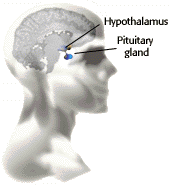

Human Reproduction Problem Set
Problem 1: Hormone released by hypothalamus
Tutorial to help answer the question
| The hormone released by the area of the brain known as the hypothalamus beginning at the onset of sexual maturity in both males and females is: |
Tutorial
Hypothalamus
|  |
With the onset of puberty, the hypothalamus increases the release of gonadotropin releasing hormone (GnRH). This hormone is needed for sexual maturity and normal reproduction. GnRH stimulates the anterior pituitary gland to release several hormones. Among them are the gonadotropins"follicle stimulating hormone" (FSH) and "lutenizing hormone" (LH.) These gonadotropins act by stimulating the production of sex hormones in the gonads (testes and ovary.) |


University of Arizona
Updated: July 15, 1999
Contact the Development Team
http://www.biology.arizona.edu
All contents copyright © 1996-99. All rights reserved.